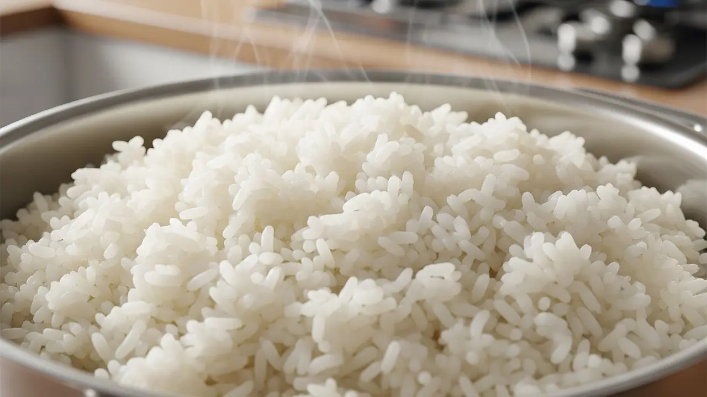
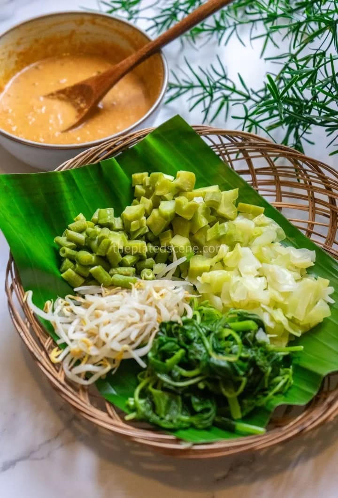
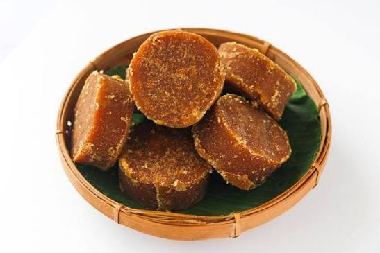
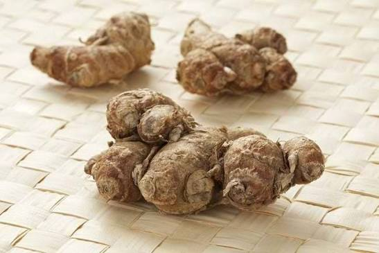
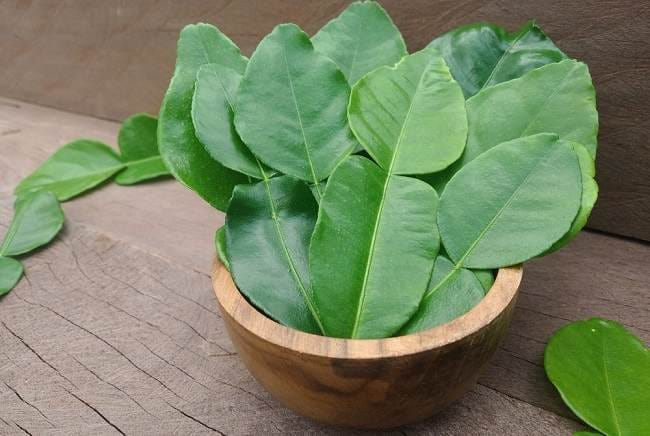
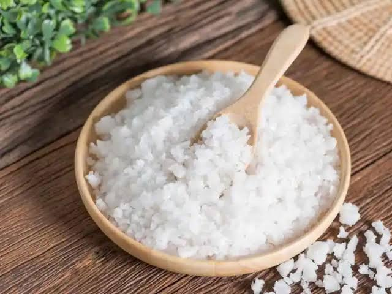
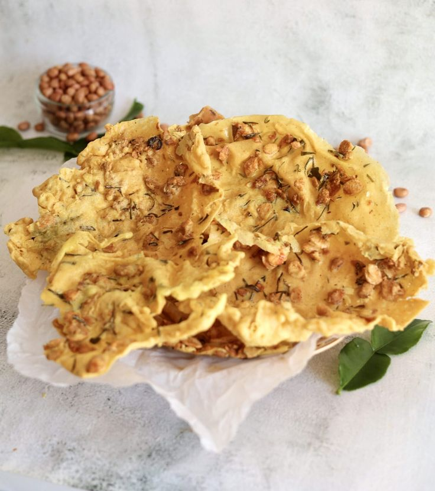

Nasi Putih

Nasi putih menjadi dasar hidangan dan sumber karbohidrat utama dalam satu piring pecel.
NASI PECELS
Sepuluh bahan dan bumbu nasi pecel beserta fungsinya pada cita rasa.
Takaran tidak dicantumkan karena berbeda pada setiap dapur.

Nasi putih menjadi dasar hidangan dan sumber karbohidrat utama dalam satu piring pecel.

Misalnya bayam, kangkung, tauge, atau kacang panjang; sumber serat yang mengikuti musim.

Bahan utama sambal: memberi tekstur kental dan rasa gurih.

Memberi rasa pedas yang menjadi ciri pecel Blitar.

Memberi manis legit dan warna cokelat, menyeimbangkan pedas dan gurih.

Rimpang beraroma khas yang menjadi penanda sambal pecel.

Memberi aroma tajam dan rasa gurih.

Memberi aroma segar dan mengurangi kesan berat dari kacang.

Penguat rasa yang menyeimbangkan seluruh sambal.

Misalnya rempeyek atau kerupuk, di samping lauk pada halaman Menu.